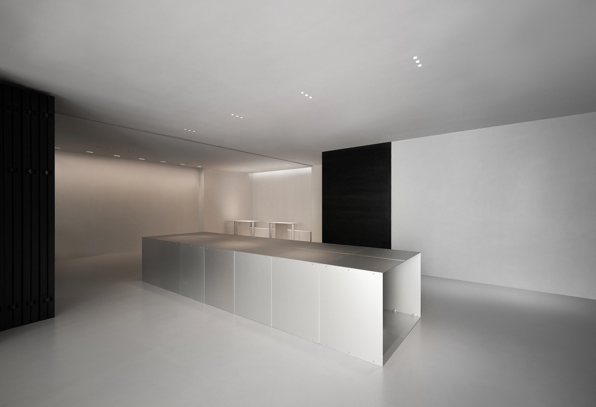
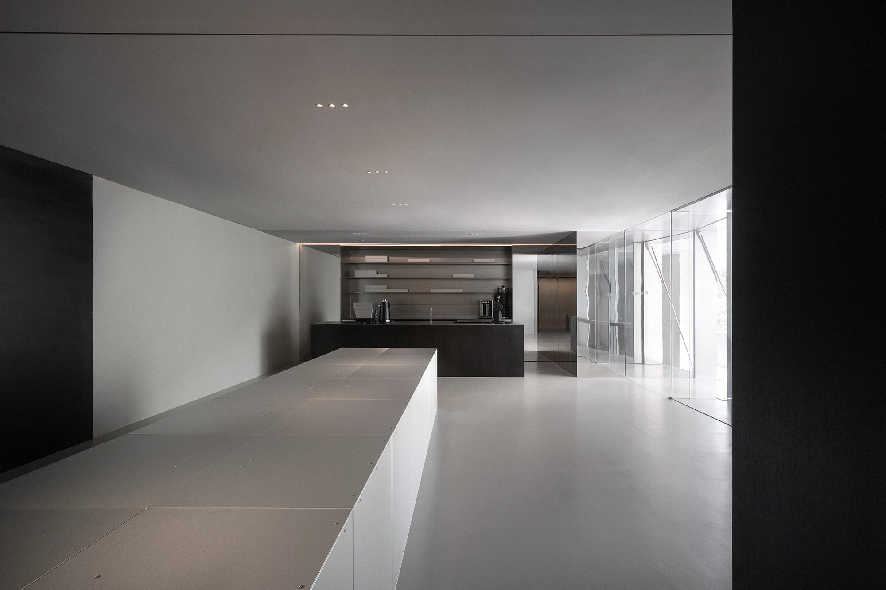
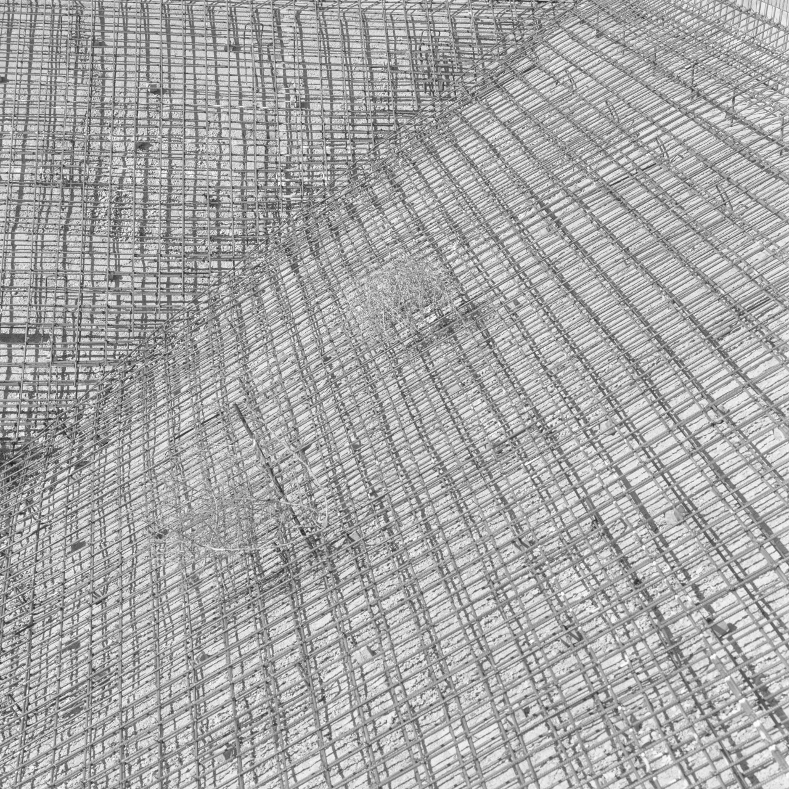
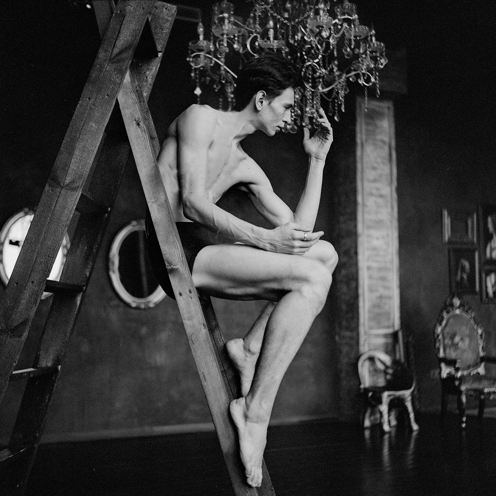
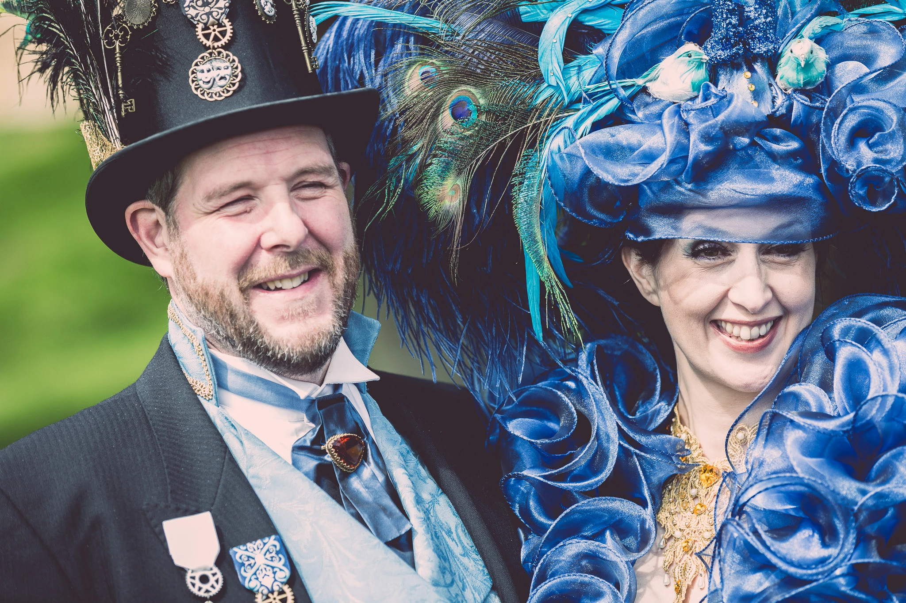
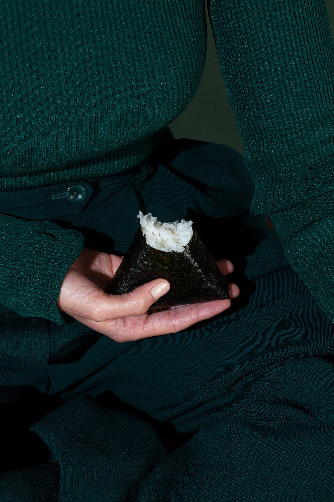
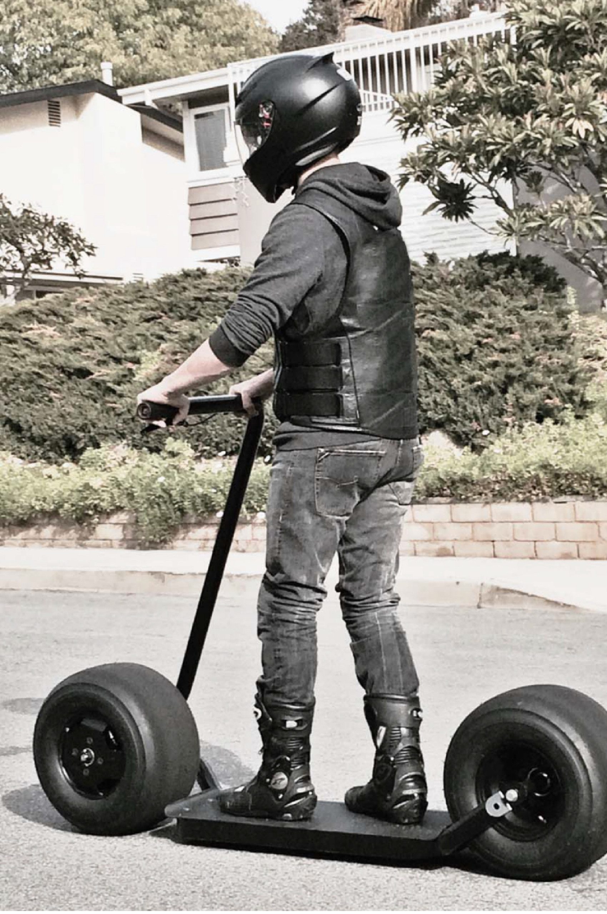

Atelier 2M2 新作，一座融合咖啡、展览与冥想空间的复合建筑。以「洞穴寓言」为概念，在喧嚣城市中构建一处向内的静谧场域。







这是一份独立的设计与文化出版物，关注建筑、艺术、时尚、摄影与音乐领域的当代实践。我们相信设计是一种观看世界的方式——通过空间、物体与图像，重新建立人与环境的感知连接。
自 2017 年创立以来，我们持续记录全球范围内有思考的设计实践，从东京到哥本哈根，从上海到纽约。